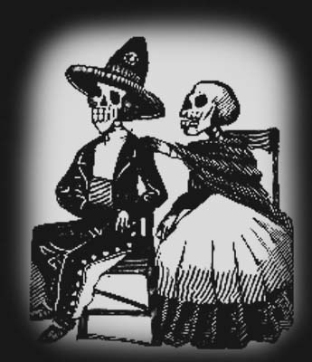

Festividad del dia de muertos en Mexico
Que se Celebra??
El Día de Muertos es una celebración mexicana que honra a los ancestros durante el 2 de noviembre, coincidiendo con la celebración católica del Día de los Fieles Difuntos. Aunque se ve primariamente como una festividad mexicana, también se celebra en muchas comunidades de los Estados Unidos donde existe una gran población México-americana, y en una menor medida también se celebra en algunas partes de Latinoamérica.
A pesar de ser un tema morboso, esta festividad se celebra alegremente, y aunque ocurre en fechas cercanas al Día de Todos Los Santos, y al Día de todas las Almas, en lugar de sentirse temerosos de espíritus malévolos, el humor en el día de los muertos es mucho más relajado, similar al Halloween, con un mayor énfasis en la celebración, pero honrando las vidas de los difuntos.
Los orígenes de la celebración del Día de Muertos en México, pueden ser trazados hasta la epoca de los indígenas de Mesoamérica, tales como los Aztecas, Mayas, Purepechas, Nahuas y Totonacas. Los rituales que celebran las vidas de los ancestros se realizaron por estas civilizaciones por lo menos durante los últimos 3,000 años. En la era prehispánica era común la práctica de conservar los cráneos como trofeos y mostrarlos durante los rituales que simbolizaban la muerte y el renacimiento.
El festival que se convirtió en el Día de Muertos cayó en el noveno el mes del calendario solar azteca, cerca del inicio de agosto, y era celebrado durante un mes completo. Las festividades eran presididas por el dios Mictecacihuatl, conocido como la "Dama de la muerte" (actualmente corresponde con "la Catrina"). Las festividades eran dedicadas a la celebración de los niños y las vidas de parientes fallecidos
Cuando los conquistadores españoles llegaron a América en el siglo XV, ellos estuvieron aterrados por las practicas paganas de los indígenas, y en un intento de convertir a los nativos americanos al catolicismo movieron el festival hacia fechas en el inicio de noviembre para que coincidiesen con las festividades católicas del Día de todos los Santos y Todas las Almas. El Día de Todos los Santos es un día después de Halloween, donde este último fue también un ritual pagano de Samhain, el día céltico del banquete de los muertos. Los españoles combinaron las costumbres de Halloween con el festival similar mesoamericano, creando de este modo el Día de Muertos.
Cercana a esta celebración se encuentra el Día de Todos Los Santos, Día de Todos Los Santos, fiesta religiosa que se celebra en muchos países de tradición cristiana. En los países de tradición católica, se celebra el 1 de noviembre; mientras que en la Iglesia Ortodoxa se celebra el primer domingo después del Pentecostés. En ella se veneran a todos los santos que no tienen una fiesta propia en el calendario eclesial. Por tradición es un día feriado no laborable.
Existen versiones que señalan que esta fecha fue establecida como una respuesta ante la celebración pagana del 31 de octubre. Pero estas versiones no resultan muy sólidas por cuanto la celebración del "Halloween" o "día de las brujas" es una festividad proveniente de los Estados Unidos de América. En España, dentro de la tradición católica se realiza una visita donde yacen los seres queridos. En Cataluña se celebra la denominada castanyada en la que se comen boniatos, castañas y panellets. En México se hacen ofrendas para agasajar a los fallecidos y celebrar esos dos días, que se quitan el día 2 por la noche, pudiéndose consumir en ese momento.

Juan Carlos Romero Jimenez
FECHAS PRINCIPALES
- 27 de Octubre:------------> Abortados.
Este dia esperan todos los niños que no llegaron a nacer.
- 28 de Octubre: -----------> San Simon "Accidentados".
En este dia se esperan a todos los difuntos que fallecieron en un accidente.
- 29 de Octubre: -----------> "Los niños de Limbo".
Todos los niños que no fueron bautizados
- 31 de Octubre:------------> Todos los niños.
Este dia se esperan a todos los niños que fueron bautizados pero desafortunadamente fallecieron de pequeños.
- 1 de Noviembre: -----------> Todos los Santos.
En este dia se esperan a todos los difuntos, en este dia llegan todos.
DIA DE MUERTOS
OFRENDA
Ofrenda:
La ofrenda es ese ritual colorido donde el individuo y la comunidad están representados con su dádiva; es un acto sagrado, pero también puede ser profano: la tradición popular es la simbiosis de la devoción sagrada y la práctica profana.
Ofrendar, en el Día de Muertos, es compartir con los difuntos el pan, la sal, las frutas, los manjares culinarios, el agua y, si son adultos, el vino. Ofrendar es estar cerca de nuestros muertos para dialogar con su recuerdo, con su vida. La ofrenda es el reencuentro con un ritual que convoca a la memoria.
La ofrenda del Día de Muertos es una mezcla cultural donde los europeos pusieron algunas flores, ceras, velas y veladoras; los indígenas le agregaron el sahumerio con su copal y la comida y la flor de cempasúchil (Zempoalxóchitl). La ofrenda, tal y como la conocemos hoy, es también un reflejo del sincretismo del viejo y el nuevo mundo. Se recibe a los muertos con elementos naturales, frugales e intangibles -incluimos aquí las estelas de olores y fragancias que le nacen a las flores, al incienso y al copal-.
La ofrenda de muertos debe tener varios elementos esenciales. Si faltara uno de ellos, se pierde aunque no del todo el encanto espiritual que rodea a este patrimonio religioso.
1. Veladoras o cirios.
Se utilizan las velas como símbolo del elemento fuego y por su asociación religiosa. Es común incluír una para cada difunto recordado más otra para un alma "olvidada." A veces las veladoras son colocadas en forma de cruz.
2. Imágenes de los difuntos.
La ofrenda se coloca en anticipación a la visita de las almas de nuestros seres queridos ya difuntos, así es que se colocan sobre el altar los retratos de los mismos. Pueden ser fotos sueltas o enmarcadas o inclusive retratos dibujados o pintados
3. Flores.
La flor de cempazúchil (tambien conocida como zempoaxochitl o cempasúchil), de color intenso anaranjado, es la más común en un altar de Muertos. Tanto su belleza como su olor atraen a las almas de los difuntos hacia la ofrenda. Muchas veces las flores se colocan en forma de cruz o formando un "sendero" a seguir por las ánimas. Tambien se ocupan -- aunque en menor medida -- otras flores de color morado y blanco.
4. Sal.
Se coloca en un recipiente sobre el altar como símbolo de purificación.
5. Incienso.
Tradicionalmente no se utilizaba el incienso en sí sino el copal, una resina que, al quemarlo, arroja un humo muy aromático. El agradable olor atrae a las almas de los difuntos hacia la ofrenda y también, por su asociación con la religión, es un fuerte símbolo de oración y purificación. De no poder conseguirse el copal, se puede emplear el incienso en alguna forma para este propósito. En algunos lugares tambien se emplean hierbas aromáticas (como son el romero y la manzanilla) para un fin parecido, haciendo de ellos una especie de té aromático.
6. Papel picado.
Se tratan de un papel delgado de colores conocido en México como papel de china, al cual se le hacen varios cortes para formar figuras como son las calaveras, las calabazas, las lápidas y diferentes palabras referentes a la ocasión. Normalmente se pegan varios rectángulos de este papel sobre un hilo para formar una especie de guirnalda para adornar el altar. En México se consigue papel picado ya hecho en los mercados, pero tambien se puede elaborar en casa.
7. Representaciones de los elementos aire, agua, tierra y fuego.
Ya hemos mencionado a las velas como símbolo del fuego. El papel picado, objeto ligero que se mueve en el aire, representa ese elemento. La tierra se puede representar con frutos de la misma, y para el elemento agua basta colocar sobre el altar un vaso de este líquido.
8. Calaveras.
Suelen emplearse calaveras de diversos tamaños y confeccionadas bien de yeso o de distintos materiales comestibles como son el chocolate, el azúcar y el amaranto. Pueden ser sencillas o muy elaboradas obras de arte. Las calaveras sirven de recuerdo del destino final de cada ser humano y, a la vez, de la aceptación de la muerte como inevitable y no del todo temible, pues es dulce. Las calaveras frecuentemente se regalan entre amigos y comúnmente llevan en el frente el nombre del que la recibe.
9. Pan de muerto.
Casi siempre está presente el pan de muerto en alguna de sus formas (dulce y redondo en algunas partes de México, salado y en forma de cuerpo en otras).
10. Comida y bebida.
Las ánimas que visitan el altar han viajado desde muy lejos y necesitan recobrar fuerzas con una buena comida. En la ofrenda se acostumbra incluír platillos tradicionales mexicanos como son los tamales y el mole con pollo o pavo, los que se presentan en ollas y platos de barro cocido. No pueden faltar también las frutas de la estación y la calabaza en tacha. Además, se pueden colocar las comidas y dulces que más les gustaron en vida a los ahora difuntos y las bebidas (alcohólicas y no) que disfrutaban. Ah, y si el difunto fumaba, se le provee de algunos cigarrillos para después del festín.
11. Artículos religiosos.
Ya que el Día de los Muertos actual es el resultado de la mezcla de tradiciones prehispánicas americanas con las europeas de la época de la Conquista, los elementos católicos figuran en la celebración. Cruces, crucifijos, rosarios e imágenes de santos (como los a que tenían especial devoción a los difuntos) se pueden colocar sobre el altar. Se pueden colocar las flores, los cirios y hasta las frutas y otros elementos de la ofrenda en forma de cruz.
12. Objetos varios.
La ofrenda se arma para atraer y agasajar a los difuntos de la familia y es de suponerse que en donde quiera que estén siguen necesitando y disfrutando de las mismas cosas que cuando estuvieron vivos. Por lo mismo, se puede colocar sobre el altar cualquier objeto del gusto del difunto. Juguetes (en el caso de los niños), objetos de aseo personal y artículos que empleaba en su trabajo son algunos ejemplos.
13. El petate.
Entre los múltiples usos del petate se encuentra el de cama, mesa o mortaja. En este particular día funciona para que las ánimas descansen así como de mantel para colocar los alimentos de la ofrenda.
DIA DE MUERTOS
CATRINA
La Catrina, originalmente llamada La Calavera Garbancera,1 es una figura creada por José Guadalupe Posada.
La versión original es un grabado en metal con autoría del caricaturista José Guadalupe Posada. El nombre original es Calavera Garbancera. «Garbancera» es la palabra con la que se conocía entonces a las personas que vendían garbanza que teniendo sangre indígena pretendían ser europeos, ya fueran españoles o franceses (este último más común durante el Porfiriato) y renegaban de su propia raza, herencia y cultura.
Esto se hace notable por el hecho de que la calavera no tiene ropa sino únicamente el sombrero; desde el punto de vista de Posada, es una crítica a muchos mexicanos del pueblo que son pobres, pero que aun así quieren aparentar un estilo de vida europeo que no les corresponde.
La imagen de la Catrina se está convirtiendo en la imagen mexicana por excelencia sobre la muerte, es cada vez más común verla plasmada como parte de celebraciones de día de muertos a lo largo de todo el país, incluso ha traspasado la imagen bidimensional y se ha convertido en motivo para la creación de artesanías, ya sea de barro u otros materiales, las cuales dependiendo de la región pueden variar un poco en su vestimenta e incluso su famoso sombrero, pero que igual se les ha dado en llamar "catrinas".
DIA DE MUERTOS
JANITZIO
Janitzio es una de las islas del lago de Pátzcuaro, ubicado en el Estado de Michoacán, México. Es la más importante de las cinco islas del lago de Pátzcuaro.
Su nombre original purépecha es Janitsïo o Flor de trigo o maíz.
Janitzio es famosa por la gran cantidad de turismo que recibe, proveniente tanto de México como de todo el mundo. En lo alto de la isla, observable desde lo lejos, existe un monumento del héroe nacional de la revolución de independencia (con su brazo derecho alzado y su puño cerrado), José María Morelos y Pavón. Este monumento contiene en su interior una colección de pinturas que describen la biografía del héroe mexicano. Existe un mirador en la estructura en el puño del monumento donde se puede admirar todo los alrededores de la isla así como gran proporción del lago de Pátzcuaro.
La isla se puede visitar yendo en barca desde Pátzcuaro. El visitante puede disfrutar durante una corta travesía de la actuación que realizan los pescadores en sus barcas, como rememoración de la pesca que se hacía antiguamente. El despliegue de las artes de pesca (redes en forma de mariposa) en un momento determinado es un espectáculo muy bello. sus hermosas y sensuales vistas son muy suculentas y sexys. El 1 de noviembre tiene lugar en la isla una ceremonia muy querida para sus habitantes. Durante la noche es costumbre llevar las ofrendas a los muertos. Se hace una procesión iluminada con cirios y animada con cánticos religiosos. Toda la isla resplandece con luces y antorchas.
DIA DE MUERTOS
HUAQUECHULA
En esta localidad, ubicada a 45 km al suroeste de la capital poblana, sus habitantes elaboran asombrosas ofrendas de “cabo de año”, dedicadas a honrar a quienes fallecieron antes del 1 de noviembre.
En esta interesante población indígena, ubicada entre las estribaciones de la Sierra Mixteca y el volcán Popocatépetl, a 45 km al suroeste de la ciudad de Puebla, se representa entre el 1 y 2 de noviembre uno de los más impresionantes despliegues rituales para honrar a los difuntos en el centro de México. Hacia allá nos dirigimos para admirar los hermosos altares que han hecho célebre a este lugar, independientemente de su importancia histórica como antigua guarnición azteca y por el espectacular convento franciscano del siglo XVI.
La fiesta de muertos es la más importante de Mesoamérica y tiene una raíz fundamentalmente prehispánica, a decir del arqueólogo Eduardo Merlo, experto en el tema. Se trata de un antiguo rito de cosecha cuyo tiempo de celebración se hizo coincidir, por los frailes españoles, con la de los fieles difuntos del 2 de noviembre en el calendario católico. Pero los muertos conservaron su representación milenaria y han sido el pretexto de la comunidad para fortalecer su identidad y compartir los frutos obtenidos de la tierra. Los difuntos son la semilla de la que ha de germinar simbólicamente la planta de sus descendientes.
Sus ofrendas mortuorias
Éstas definen un peculiar estilo que distingue a Huaquechula de otros lugares en donde se lleva a cabo esta festividad, y es el resultado de fusionar la tradición ornamental prehispánica de la región con la estética de los altares de Jueves Santo de la tradición católica; de ahí su sorprendente aspecto monumental predominantemente blanco. Nos referimos a los altares de “cabo de año”, dedicados a aquellos individuos de la comunidad que fallecieron durante los meses previos a la celebración del primero de noviembre.
Es importante distinguir entre las ofrendas tradicionales y los altares de muerto recientes. Son estos últimos estructuras piramidales de entre tres y cuatro niveles (semejantes a un pastel de bodas) erigidas generalmente en el recibidor de las casas, a donde han de llegar las ánimas para disponer del banquete que se les ofrece.
Los altares están constituidos de:
Primer nivel.
Que representa el mundo terrenal, en éste se ubica la foto del familiar fallecido reflejada en un espejo, por lo que no se le ve sino indirectamente. Tal disposición recibe diversas interpretaciones. Para algunos lugareños el espejo representa la entrada al más allá, o al inframundo, según la explicación prehispanista de los guías de la localidad. Queda asumirlo también como la expresión simbólica de eternidad y de aquellos que “fueron pero ya no son”, en palabras del arqueólogo Eduardo Merlo, para utilizar una convencional forma cristiana de aludir a los muertos.
El segundo nivel.
Representa el cielo, en donde es posible reconocer angelitos, y a la Virgen María. La tela de satín blanco suele estar dispuesta en forma de caprichosos pliegues que semejan nubes. Con frecuencia se observa la incorporación de elementos diversos de la liturgia católica como el cáliz con la hostia y ceras de diversos tamaños. La modernidad ha llevado a sustituir las velas por luces de neón blancas.
El tercero o cuarto nivel.
Simboliza la cúspide celestial, con la presencia invariable de un crucifijo que preside desde lo alto toda la estructura, rematando un espectáculo visual de indudable belleza.
DIA DE MUERTOS
MI OPINION
El dia de muertos es una fecha muy importante para nuestro pais "Mexico", ya que es una tradicion mexicana donde todas personas, esperana sus parientes difuntos.
Esta tradicion se va perdiendo poco a poco en nu pais, ya que nuevas tradiciones van renovando el dia de muertos, como lo es el
dichoso Halloween.
Dejemos eso, nuestra tradicion es esperar a los difuntos, con lindas ofrendas: comida, bebidas, fotos de los difuntos, ceras, flores, etc. porque hay que cuidarla, es una linda tradicion y es "NUUESTRA".
DIA DE MUERTOS